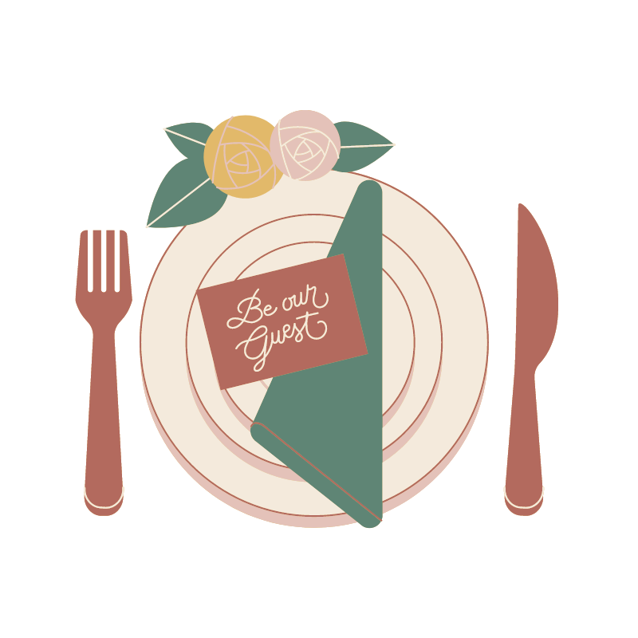

Wedding Day, Friday 15th
16h - 17hr, Church, St Cannat, Provence
18hr - 21hr, Cocktail, 1315 Rue chiminer Stint Cannat
21hr - 6am, Dinner/Dance
Pool Party, Saturday 16th
Day 2 will kick off from 1pm, where will be gatheirng by the pool for brunch. Bring your speedos as today will be a chilled day in the sun drinking rose. There will be a petaque tournament in the afternoon. The evening/night will comprise of 4 DJs (Beats and Pieces etc) With a South African Braai for dinner.

Gift Registry
Ifff you have gotten on an aeroplane (+1hr (London doest count )) to come to this wedding you do not need to get us a gift! However if you havent then please give genrously at the following link xxx
RSVP here
Travel in Provence
Here are a few little villages you cannt skip when in the area.

Les Baux-de-Provence
Test test 2 Located in the Alpilles mountains, atop a rocky outcrop that is crowned with a ruined castle overlooking the plains to the south. Poplation 391. Little far away but elite! Go there
Open maps

Lourmarin
Listed as "one of the most beautiful villages in France", Lourmarin nestles in the middle of vineyards, olive groves and almond trees. Lourmarin has been settled for at least a thousand years, and was a Neolithic campsite before that. A fortress was first built at the site in the 12th century, and was rebuilt by Foulques d'Agoult in the 15th century on the foundations of the earlier castle.
Open mapsBonnieux - église haute
This one is top top draw and maybe my fav of the area. No Les Baux-de-Provence is and this is second fav.
Open maps